|
|
HELP FIND THE FOLLOWING LOCATIONS
PAGE 30
THE BARON:
The High
Terrace (Robert Asher: September 1966)
Unknown 1
- Johnny Haswell and Rhys
Brown run Mannering off the road with a lorry


THE SAINT: Vendetta for the Saint (Jim
O’Connolly: 1967) - The Saint makes his way out of the
fishing village on the Palermo bus.

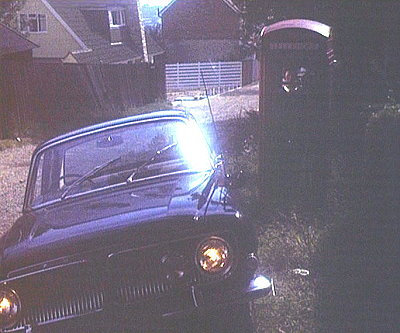
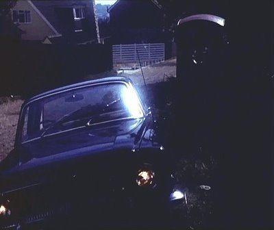
THE BARON:
The Seven
Eyes of Night (Robert Asher: April 1966)
Forte Post House
Hotel, Hemel Hempstead (site redeveloped as a
Holiday Inn) - John Mannering is in France to buy "The Seven Eyes of
Night". As he arrives in his Jensen at this
motel and is watched by Jeff Walker and Vevel who later attempt to
steal the
jewels from Mannering.
Identified by Andrew Pearce, April 2017

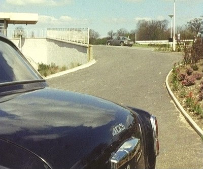
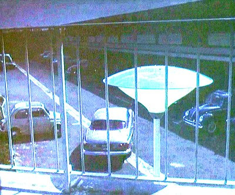
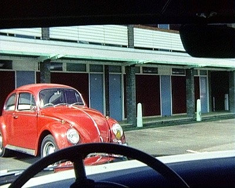
Unknown 1 -
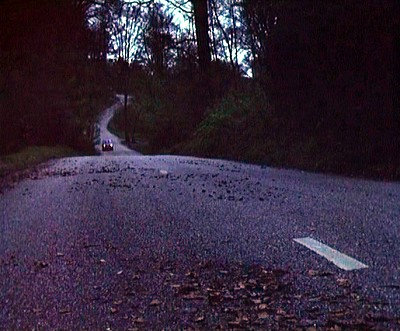
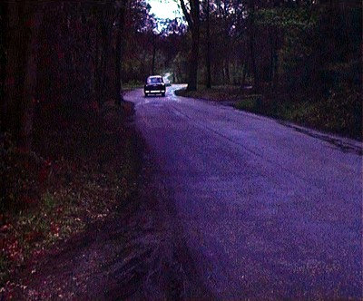
THE BARON:
Something
for a Rainy Day (Cyril Frankel: November 1965)
B23: Barnes Lodge,
Kings Langley (demolished 1975) - Max Holder and
Lucas
(Derek Newark) are holding Ann Seldon at the Chateau Celeistine.
Mannering
(Steve Forrest) and Cordelia (Sue Lloyd) attempt to rescue Anne, but
The Baron
is confronted by a vicious guard dog and is captured by Lucas.
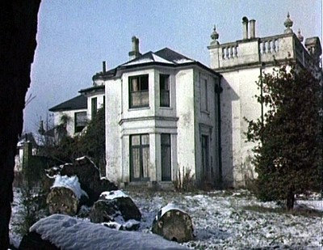

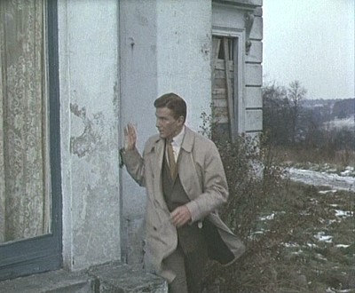
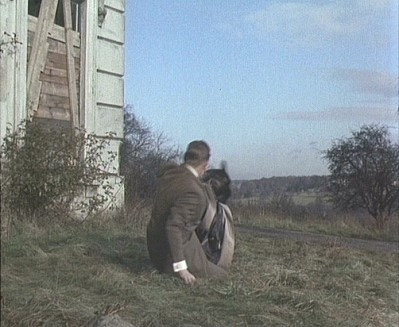
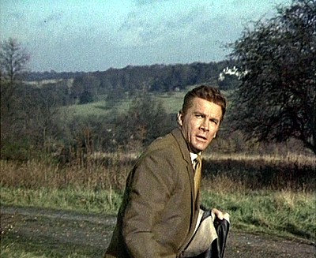
Also appears in THE
SAINT: The
Desperate Diplomat (Ray Austin: 1968)
Simon Templar (Roger Moore) and Sara (Susan Farmer) arrive in at the
house near Zurich where Jason Douglas is hiding. Unfortunately, Walter
Faber (Robert
Hardy) is
already waiting for them.
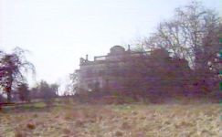
Unknown 1 - Charlotte Russell and Mark Seldon drive to a collect the collection from where he has hidden it.
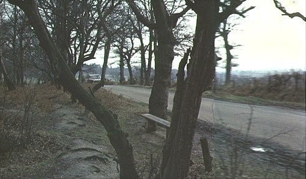
Unknown 2 - In the Citroen Mannering, Cordelia and Ann Seldon try to locate the place where Mark Seldon hid the collection he stole.
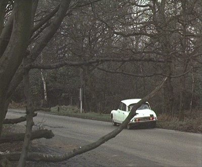
Unknown 3 - Charlotte Russell and Mark Seldon drive to a collect the collection from where he has hidden it.


Unknown 4
- John Mannering drives
in his Citroen towards the farm where he is to meet Seldon's daughter.
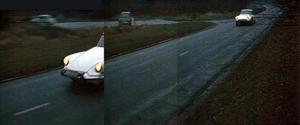
THE BARON:
Portrait of
Louisa (John Moxey: September 1965)
J19: Pinks
Hotel/Farm on Rectory Lane
- Louisa drives her Jaguar
to Peter Langley's home, Barnsmore Cottage. Later John Mannering
arrives in his
Jensen to question Peter, but Peter is shot before he can talk.
(Identified by Geoff Dodd, April 2023)

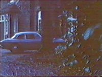

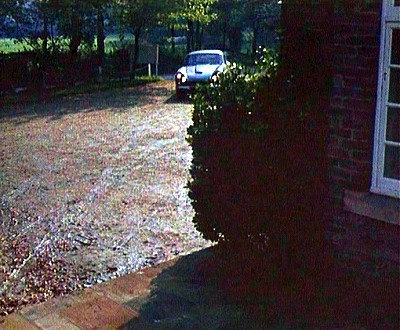

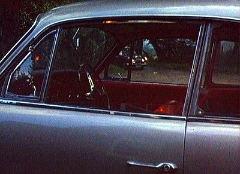
Think you know a spot? Need a bigger image? Email me.
< Previous | Index | Avengerland | Next >
Copyright © 2021 Anthony R. McKay